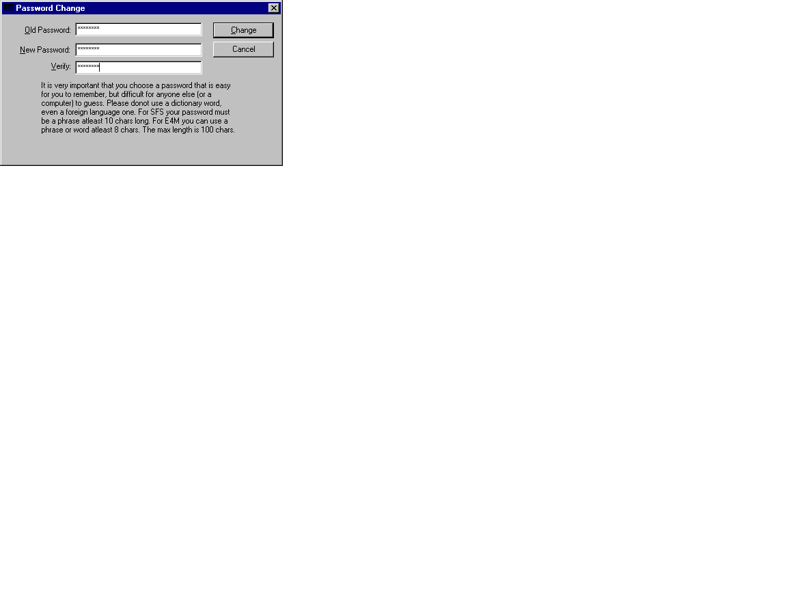

Copyright (C) 1998-99 Paul Le Roux. All Rights Reserved.
If you are worried that someone might have access to your documents, emails, sales projections, contracts, tax returns or receipts, romantic letters, or any other private files, then this product is for you.
Don't rely on the simple password protection mechanisms of popular Office packages, or compression utilities, they can be broken or by-passed easily.
Get your self state-of-the art encryption, for this task you need either this product, or something like PGP. PGP is great for encrypting email's, but when it comes down to it, for file encryption it's cumbersome, each time you need to use a file you must decrypt it, update or print it, then encrypt the file again, remembering to wipe the original.
In addition how do you name your files? Do you use descriptive files such as bank-statements.zip.pgp, xyz-corp-contract.doc.pgp, or whatever, these descriptive filenames give others information you would rather they not know. Did you know that a certain Office package keeps a record of the last X files accessed in the registry even if you turn this feature off in it's user interface?
E4M solves many of these problems. It's fast, seamless, integrated, legal, free, 128-bit encryption regardless of who you are and where you live.
E4M is an on-the-fly disk encryption product. What this means is create a volume on your hard disk, CDROM, floppy or other media which is essentially just a normal file. The file however is in fact a file system itself. It contains all the structures needed by your operating system to recognise the file as a file system of a particular type such as FAT or NTFS. This is called a "file hosted volume".
Or you could choose a blank or unwanted partition on a local hard disk or floppy disks and format it using E4M. You can then mount this new encrypted volume, and use it like you would any other drive. This is called a "Raw partition volume".
The only difference is that Raw partition volumes do not have a file system in the middle, so they provide an encrypted file system on top of a Raw partition. As opposed to file hosted volumes which need an existing file system to "host" the volume file. An example would be a E4M volume called "myfiles.vol" located on the C drive, rather than the same volume located on the second partition of your hard disk.
To your operating system, these new volumes will work exactly like your C drive, or any other drive on your system.
Tools are provided to "mount" a volume, and to create a volume. The process of mounting a volume involves pretending that the volume file or partition is in fact a removable media device attached to your system.
Thanks for using my product, and enjoy!
Paul Le Roux.
In continuing to read this documentation, and in using this product you agree to the following terms and conditions:
What's new from older versions:
To create a volume file you will need to click on the icon "Create Volume".
The program "volformat" should start, and will have the title "Create E4M Volume".
You should see the following wizard.
There are six steps in creating a volume:
Choose a type for your volume. The format or type of your volume can be either one of the following formats:
You should only use SFS is you want to be able to use your volumes in DOS and Windows 3.x. If you use SFS volumes you will need to use the SFS real mode driver for Windows 95 & 98. The E4M driver for Windows 95 & 98 does NOT support SFS volumes. The E4M NT driver does support SFS volumes.
SFS volumes have exactly 512 more bytes than E4M for the same format size. This is because E4M needs a header sector and a boot sector. SFS uses the boot sector for its header, and then needs E4M to fake the boot sector for it at runtime. Which directly gives rise to the following important limitation:
E4M volumes can be reformatted using either FAT or NTFS without any limitations. Obviously though a volume formatted using NTFS will only work on operating systems that support NTFS volumes, ie: NOT Windows 95.
Once you have selected a volume type, the "Next" button will be enabled and you can proceed to the next step.
Select where on your system the volume is to reside, you should click the "Browse Files" button or the "Raw Devices" button to choose the location for the new volume.
Once you have picked a location for your volume, the "Next" button will be enabled and you can proceed to the next step.
Select the type of encryption you want for your volume.
You can choose one of the listed ciphers.
You must also choose either HMAC-MD5 or HMAC-SHA1 for use with Pkcs-5.
If you are creating a legacy volume such as SFS, Pkcs-5 is not used.
Once you have picked the cipher of your choice, the "Next" button will be enabled and you can proceed to the next step.
Please choose a reasonable size for your volume. There is a minimum and maximum size. The minimum size is 19KB, while the maximum size is 2GB.
If you type in an invalid size the wizard will not let you proceed to the next step.
If you are creating a volume on a Raw partition, the size edit box is disabled. This is because the size of the partition onto which your volume is created is set by whatever program you used to partition your drive (such as fdisk). The size is fixed and cannot be changed here. Simply click the "Next" button.
Once the system has a valid size for your volume. The wizard will enable the "Next" button and you can proceed to the next step.
The system requires that you enter a password no shorter than 8 characters for E4M; and no shorter than 10 characters for SFS. SFS requires a complete phrase, this simply means a minimum of two words separated by a space which together are no less than 10 characters long.
Please be very careful when choosing your password. It should be picked carefully, please do not use any of the following:
Examples of good passwords include words which include combinations of upper and lowercase letters, as well as punctuation and numbers.
Once you have selected a password, and typed it in twice for verification. The system will let you proceed to the final step by enabling the "Next" button.
To complete the creation of your volume click the "Finish" button. There will be a short delay while your system is polled for some additional randomness which will be used in generating you volume.
Some products require that you move the mouse or type on the keyboard at this stage in order to generate randomness. E4M "hooks" the keyboard & mouse from the very start of the volume creation wizard, every keyboard stroke and mouse movement is contributing to the "randomness pool"; this pool also includes the results of many various system calls. The aim of all of this is so that the system at this stage in the creation process has good quality randomness to create a unique volume key.
Once the key has been generated for you, and your new volume has been formatted, you should see a dialog giving you statistics about your volume. Once you see this dialog the entire creation process is complete, and the wizard will automatically exit.
The concept of "mounting a volume" means to make your operating system aware of the encrypted volume, which in turn allows you to read and write files to the volume, to defrag the volume, and to do everything else you would normally do to any other disk, even including formatting the volume.
To mount a volume, you will need to click on the icon "Mount Volume". This will start the program "volmount".
You should see the following window.

This window has the following elements:
To mount a volume first select an available volume from the tree view, next type in a volume name, and a password, and finally press the mount button.
In order to make mounting a volume easier, such as automatically when a system starts up, or automatically when a particular program is run, extensive command line parameters have been provided which allow you to control the entire mount process, and any parameter or field present in the mount window. The mount parameters are:
The syntax of the command line is:
volmount [/v volume] [/sd] [/l letter] [/e] [/b] [/p password] etc
Whitespace between parameters, and parameter values does not matter.
The order of the parameters does not matter.
The concept of "unmounting a volume" means to take away the operating systems knowledge of your encrypted disk.
To unmount a volume, you will need to click on the icon "Unmount Volume". This will start the program "volmount".
You should see the following window.

This window has the following elements:
To unmount a volume first select a mounted volume, and then press the unmount button.
To change a volumes password, you will need to follow the steps for mounting a volume, but instead of pressing the mount button, press the change password button. This will prompt you with the Password Change window.
You should see the following window.

This window has the following elements:
To dump a volumes contents you can use the command line only tool "voltest".
This program accepts the following parameters:
This tool displays the contents of an E4M volume. It is a useful starting point to understanding how E4M volumes are structured, and in solving problems related to bad disk sectors, or other corruptions.
The tool also checks to make sure that the volumes sector encryption is working correctly.
This tool only supports file hosted volumes.
| Algorithm | Author | Key size | Block size | Implementation | Speed |
| triple-DES | IBM/NSA | 168 bits | 64 bits | Assembler | 65 secs |
| IDEA(2) | Lai & Massey | 128 bits | 64 bits | Assembler | 66 secs |
| DES | IBM/NSA | 56 bits | 64 bits | Assembler | 45 secs |
| Blowfish | B.Schneier | 256 bits | 64 bits | Assembler | 39 secs |
| CAST | Adams & Tavares | 128 bits | 64 bits | Assembler | 45 secs |
| MDC/SHA(1) | P.Gutmann | 512 bits | 160 bits | C | 87 secs |
1. SFS volumes only. 2. Commercial use of IDEA must be licensed, contact Ascom-Tech AG idea@ascom.ch
Speed is based on copying a 50mb file to an encrypted volume on a P166 MMX Windows NT 4.0 Server with 96mb ram.
SFS support is provided for all SFS volumes under Windows NT only.
Under Windows 95, Windows 95-OSR2 and Windows 98 the SFS real mode driver must be used.
E4M has been tested for compatibility against SFS v1.17.
SFS should only be used when you need support for DOS or Windows 3.x AND you experience no problems using the real mode DOS SFS driver under Windows.
If you only want to use Windows 95, Windows 95-OSR2, Windows 98, and Windows NT 4.0, then it is strongly recommended that you use E4M format volumes rather than SFS volumes.
SFS volumes have no weaknesses that I am aware of.
ScramDisk support is now no longer available. E4M now directly supports Windows 95, Windows 95-OSR2 and Windows 98.
The information below was valid as of v2.02h of ScramDisk.
To protect yourself from the attack outlined below always pick a good password, never use a password that appears in a dictionary, always try and use numbers, and other characters in addition to letters, for ScramDisk use the 2nd, 3rd and 4th password, for E4M try to use a phrase not simply a password.
The ScramDisk disk setup procedure is as follows (counting from 0):
In step 1. 2048 bytes are decrypted, but at attack can take advantage of the fact that only 1056 bytes need to be decrypted. These 1056 bytes comprises a sector IV table of 1024 bytes, and the disk key of 32 bytes.
The next steps normally decrypt and compare complete sectors (512 bytes), however an attack need only decrypt one block (for most ciphers 8 bytes or 64 bits) for each step after step 1.
This results in an attacker needing to do exactly 132 decryption's per password test cycle for a 64 bit block cipher.
On a P166-MMX machine (NT 4.0), the results are as follows for a 100,000 word dictionary attack against Blowfish volumes:
For the FIRST volume encrypted with a particular password say 'carnival'.
For the SECOND volume, also encrypted with the password 'carnival'.
This is because ScramDisk uses the output from one SHA-1 iteration to encrypt the actual disk key which is 256 bits.
The effective key length in ScramDisk is increased thanks to long 'key setting' of the 160 bit key.
132 decryption's are needed with any given 160 bit SHA-1 hash before the 256 bit disk key can be recovered.
This long setup time effectively increases the key length by about 7 bits:
2^160 = 1.46e48 decryption's
2^160 = 1.46e48 * 132 extra decryption's = 1.92e50 = approx. 2^167 = 167 bits
E4M uses the output from pkcs-5. The output is variable length.
E4M uses Pkcs-5 with a key setup counter of 1000 and a key salt of 20 bytes.
Pkcs-5 itself is based on either SHA-1 or MD5 HMAC's, the output from these HMAC's produces the exact key length required, not simply the 20 or 16 bytes produced by the one-way hash (eg: MD5).
Please see RFC2104 & 2202 for more information on HMAC's with SHA & MD5, and also see RSA Data Security Inc's Pkcs5v2 standard.
The sector scrambler in ScramDisk is based on 1024 random bytes stored in the first 2 sectors of a ScramDisk volume. These sectors, and the sector number are passed through a function which produces a 128 bit value unique to that volume and sector.
This value is then used as the whitening and CBC IV values for the actual encryption.
Therefore each sector in a ScramDisk volume has it's own constant IV, which is unique to that volume and sector. But it also means that no matter what data that sector contains the IV and whitening values are the same.
The E4M sector scrambler also uses a unique IV for each volume and sector, but this IV changes as the data written to the sector changes.
Therefore each sector in an E4M volume has not only it's own IV, but the IV chosen is dependent on the content of the entire sector.
The E4M volume format is based on the format used by SFS with the following differences:
The random number generator used in this product is based on:
E4M complies with the following standards:
The product was developed in Australia.
Australia controls the export of cryptography[1]. However as this product is exported only via the Internet the cryptography related laws donot apply.
References
1. Please see the section on Export/ import controls in http://cwis.kub.nl/~frw/people/koops/lawsurvy.htm
Other documentation is also available at http://www.gilc.org/crypto/crypto-survey.html
Please also see the standards compliance section for other references.
If you have skills which you think will be of use to the products developer, and would like to encourage, or participate in the development of this product, or you would like to beta test new versions of the product, please contact the author at paulca@rocketmail.com
I am committed to providing the best possible solution to the encryption problem by using tried and trusted encryption techniques, secure random number generation, solid key setting, together with providing solid support for as many operating systems as possible.
In addition I always provide source code, if you disagree with something I have done, tell me.
Thanks for your interest in making E4M the disk encryption product of choice.
The primary site for E4M is http://www.e4m.net/
First you will need a copy of PGP version 2.3a or later. The latest version of PGP can be found at http://www.pgpi.com/
Next you will need to get the public key used in signing the E4M distributions.
To get the public key either copy it from the web page http://www.e4m.net/, or download it from http://wwwkeys.pgp.net/ or one of the many other PGP public key servers around the world.
The key should identify itself as Paul Le Roux paulc@sdf.lonestar.org
The Key ID for this key is 0xE7959B99
Finally, open up a DOS prompt and change to the directory where you installed E4M.
Then type the following command:
pgp thesigfile.asc thefile
You should see a "Good signature" message from PGP.
If you use the Windows version of PGP, such as PGP 5 or later, go to PGPtools and click the "Decrypt/Verify" button. Next select as the "signature file" thesigfile.asc, as the "signed file" select thefile.
If you do not receive a "Bad signature" message you have a valid distribution!
thesigfile is the PGP signature file for the file you downloaded.
thefile is the actual downloaded file.
1. Support for Raw floppy volumes is not available, support for SFS is also not available
2. SFS format volumes only using SFS v1.17 or later
The E4M user interface has been fully localized as of the next version 2.0.2.
E4M has been translated into German, unfortunately this work did not make it into this release of the product. A German language module will be available in version 2.0.2.
I am looking for volunteers to translate the strings used in E4M into other languages, and/or to translate this manual.
The file "e4m.ini" is copied into your Windows directory.
The file e4mserv.exe is copied into \\WINNT\\SYSTEM32
The file e4mnt4.sys is copied into \\WINNT\\SYSTEM32\\DRIVERS
The file e4m9x.vxd is copied into \\WINDOWS\\SYSTEM\\IOSUBSYS
To uninstall E4M simply open up the Windows control panel and click "Add/Remove Programs", scroll until you find E4M, then click the "Add/Remove" button.
This will remove all E4M files, and undo changes made to the registry. The device driver will also be removed. The uninstall will NOT remove any volume files you may have created. These will have to be deleted manually assuming you no longer require them.
To report bugs please send a bug report to paulca@rocketmail.com with the following information:
I can be contacted at paulca@rocketmail.com or paulc@e4m.net
Thanks go the following people:
Any trademarks, servicemarks or other registered names or marks, as used in this document are the property of their respective owners.
Please read the file "license.txt" included with this manual. This file contains your license agreement for this product.
You are not permitted to use the product until you have read the license agreement, and the disclaimer at the top of this document.